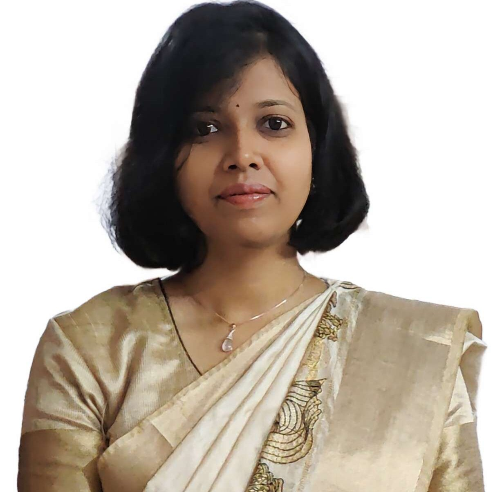

Assistant Professor | Department of Computer Science & Engineering | IIT Roorkee

I am currently serving as an Assistant Professor in the Department of Computer Science and Engineering at Indian Institute of Technology Roorkee. Prior to this, I worked as a Postdoctoral Research Fellow at the National University of Singapore (NUS).
I completed my Ph.D. in Computer Science and Engineering from IIT Bhubaneswar, where I was awarded the Prime Minister’s Research Fellowship (PMRF). My doctoral research focused on developing scalable, efficient, and adaptive communication protocols for large-scale IoT systems. Additionally, I have professional experience as a Senior Research Engineer at the Centre for Development of Telematics (C-DOT), Government of India, where I contributed to the design and implementation of advanced telecommunication systems.
My broader research interests encompass designing efficient communication protocols for low-power IoT systems, intelligent edge computing, and the integration of IoT with emerging paradigms such as digital twins. I am particularly passionate about exploring novel approaches to real-time data collection, distributed resource allocation, and intelligent network orchestration to enable reliable, high-performance IoT systems.
| S.No | Course ID | Course Name | Details | Course Level | Semester | Year |
|---|---|---|---|---|---|---|
| 1 | CSC101 | Programming with C and C++ | Theory | UG | Autumn | 2025 |
| 2 | CSC101 | Programming with C and C++ | Lab | UG | Autumn | 2025 |
| 3 | CST104 | Applications of ML | Lab | UG | Autumn | 2025 |
Email: jagnyashini@cs.iitr.ac.in
First Floor, Mehta Family School of Data Science and Artificial Intelligence, IIT Roorkee
Ph No: +91-1332-285925
Applications are invited for a Junior Research Fellow (JRF) position for the project: “Distributed Machine Learning for Ultra-Low-Power IoT Networks”. Candidates should possess an M.Tech/B.Tech in Computer Science and Engineering. Prior experience in Machine Learning along with a strong background in Embedded Programming will be preferred. The position is based at the Department of Computer Science and Engineering, Indian Institute of Technology Roorkee. Selected candidates may also be considered for conversion to a full-time PhD program.
Application Deadline: July 31, 2026. Interested students can directly mail me at : jagnyashini@cs.iitr.ac.in
Applications will continue to be processed as they arrive after the deadline.
PhD opportunities are available in the following research areas:
Interested candidates are encouraged to contact via email: jagnyashini@cs.iitr.ac.in
Internship opportunities are available for students interested in working on various research projects.
Applications are invited from B.Tech and Master's students in:
Students should possess a strong academic background and a keen interest in research.